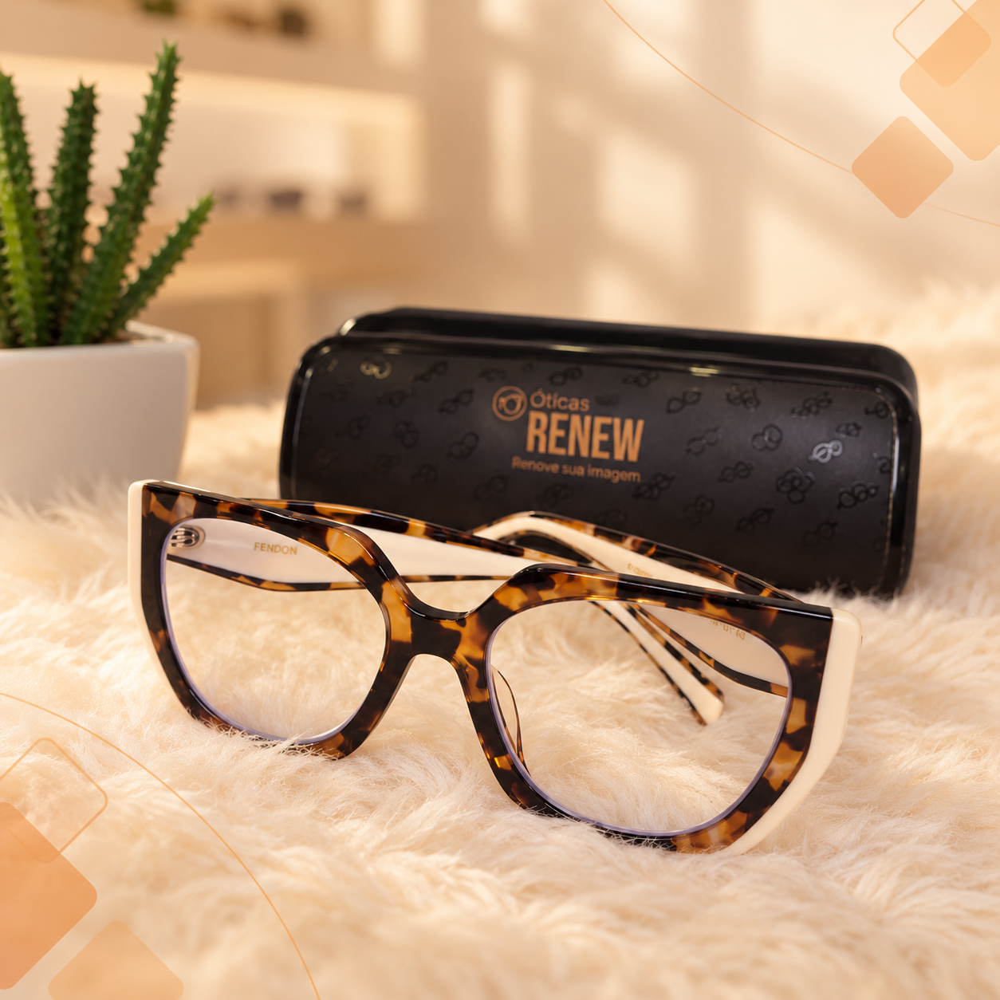

Lentes
Visão simples, multifocais, ocupacionais e lentes de contato. Aprenda a identificar a melhor escolha para o seu grau.
Conhecer lentesRenove sua imagem com a Ótica Renew.
Descubra os materiais, lentes e tratamentos ideais para a sua rotina de forma simples e transparente.

Visão simples, multifocais, ocupacionais e lentes de contato. Aprenda a identificar a melhor escolha para o seu grau.
Conhecer lentesTecnologia e proteção para seus olhos: antirreflexo, filtro azul, lentes fotocromáticas e a tecnologia Transitions.
Conhecer tratamentosEntenda as diferenças entre resina, policarbonato e alto índice para garantir lentes leves e resistentes.
Conhecer materiaisNavegue pelo nosso menu interativo para consultar informações sobre tratamentos, materiais, exames e opções de lente de forma rápida.
Entenda tudo antes de fazer o seu orçamento, com o nosso assistente virtual!
Navegar pelo menu interativoSegunda a sexta, das 09h às 18h | Sábado, das 09h às 13h
Ver informações de contato